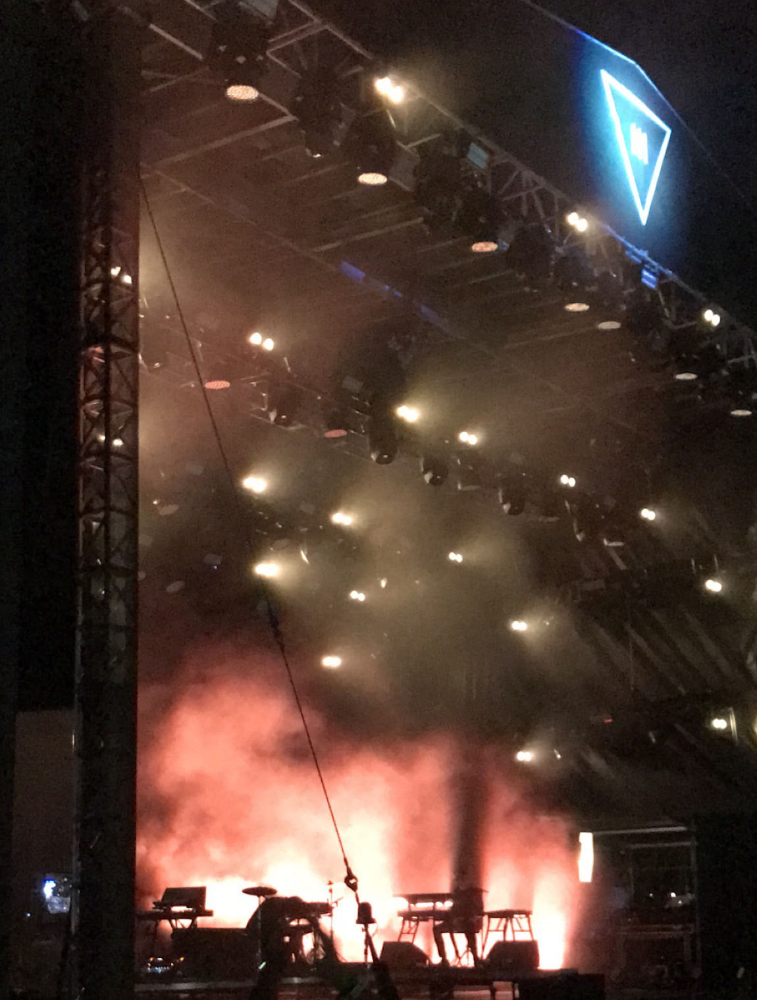

Elijah James Bogdansky | MUSIC BUSINESS PROFESSIONAL
My Adventures...
"Mary" | an Opera by Kanye West | Art Basel 2020 | Miami FL
In 2019, I worked closely with an executive team to handle the ins and outs of Artist Relations surrounding III Points Music Festival in Wynwood. I was blessed to work with an incredible team of festival producers, dozens of talented
artists and bring my own talents to the table. I aided in relations between the artist and the festival for several major artists including Tyler the Creator, Beach House and The Internet. Additionally, I made decisions in the set up of
artist green rooms, managed supplies and supported stage managers across 7 stages. Working with this festival was a well-rounded experience, requiring me to spend time both in the field and in an office setting. I was able to learn a lot
about Redbull Sponsorship at this event and worked closely with the Redbull promotional team to supply every artist with a Redbull and promotional displays.
III Points Music Festival | February 2019 | Miami FL
In 2019, I worked closely with an executive team to handle the ins and outs of Artist Relations surrounding III Points Music Festival in Wynwood. I was blessed to work with an incredible team of festival producers, dozens of talented
artists and bring my own talents to the table. I aided in relations between the artist and the festival for several major artists including Tyler the Creator, Beach House and The Internet. Additionally, I made decisions in the set up of
artist green rooms, managed supplies and supported stage managers across 7 stages. Working with this festival was a well-rounded experience, requiring me to spend time both in the field and in an office setting. I was able to learn a lot
about Redbull Sponsorship at this event and worked closely with the Redbull promotional team to supply every artist with a Redbull and promotional displays.

Looking to the Future...
In 2020, I am looking forward to the opportunities adversity brings. With an international pandemic rocking the world, especially the world of entertainment, people need the joy of music more than ever. Summer 2020, I hope to find a virtual internship that allows me to explore new, creative alternatives to producing traditional live performance events and concerts. With thousands of venues, concerts and festivals cancelling events for the near future, I want to find an exciting, engaging and lucrative alternative to both support artists and provide audiences with the highest quality of entertainment.